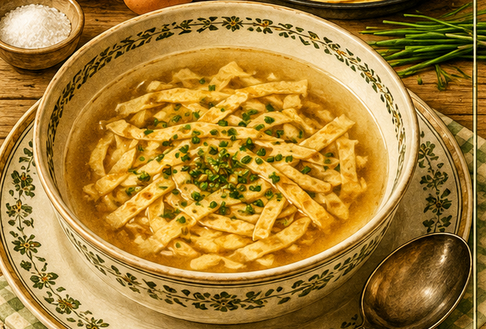

Flädlesuppe
Eine klare Suppe mit in feine Streifen geschnittenen Eierpfannkuchen.

Originale Überlieferung
Für die Suppe wird Wasser aufgestellt. Mehl, ein Ei, Milch und etwas Salz werden zu einem dünnen Brei verrührt und in Fett gebacken. Ist der Pfannkuchen kalt, wird er wie Nudeln geschnitten und in die Suppe gegeben. Anschließend wird abgeschmeckt.
Moderne Übertragung
Aus Mehl, Ei und Milch werden dünne Pfannkuchen gebacken. Nach dem Abkühlen schneidet man sie in Streifen und gibt sie erst beim Servieren in die heiße Brühe.
Zutaten
- 1 l kräftige Brühe
- 80 g Mehl
- 1 Ei
- etwa 150 ml Milch
- 1 Prise Salz
- etwas Fett zum Backen
- nach Wunsch Schnittlauch
Zubereitung
- Mehl, Ei, Milch und Salz zu einem dünnflüssigen Teig verrühren.
- In wenig Fett sehr dünne Pfannkuchen ausbacken.
- Pfannkuchen abkühlen lassen, aufrollen und in feine Streifen schneiden.
- Brühe erhitzen und abschmecken.
- Flädle in Teller verteilen, mit heißer Brühe übergießen und nach Wunsch mit Schnittlauch bestreuen.